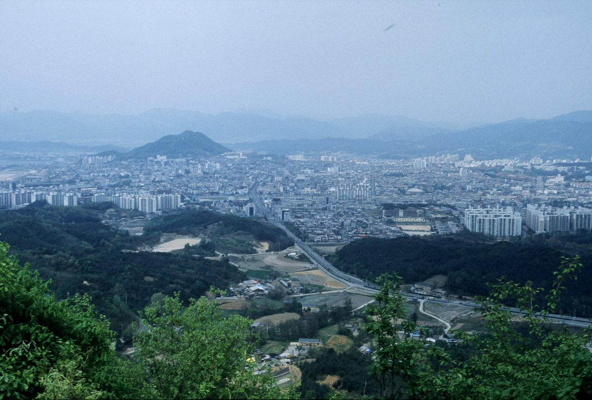
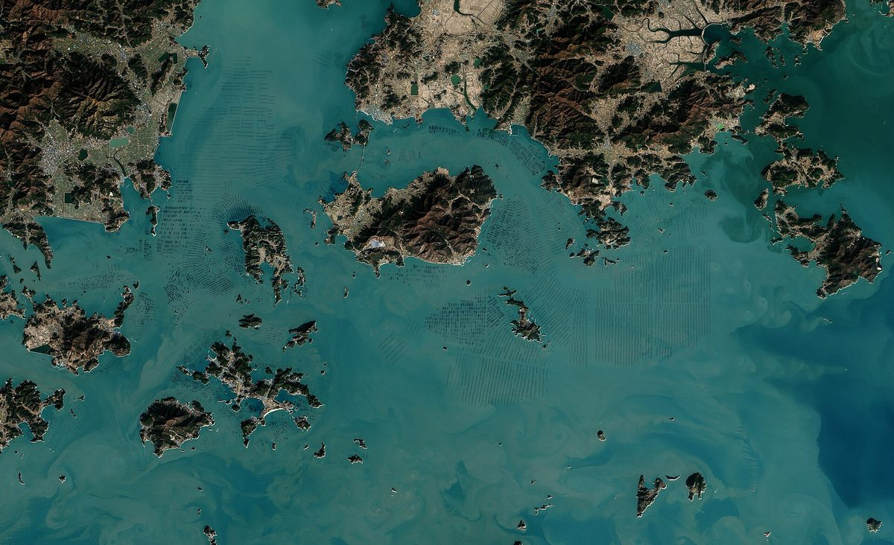
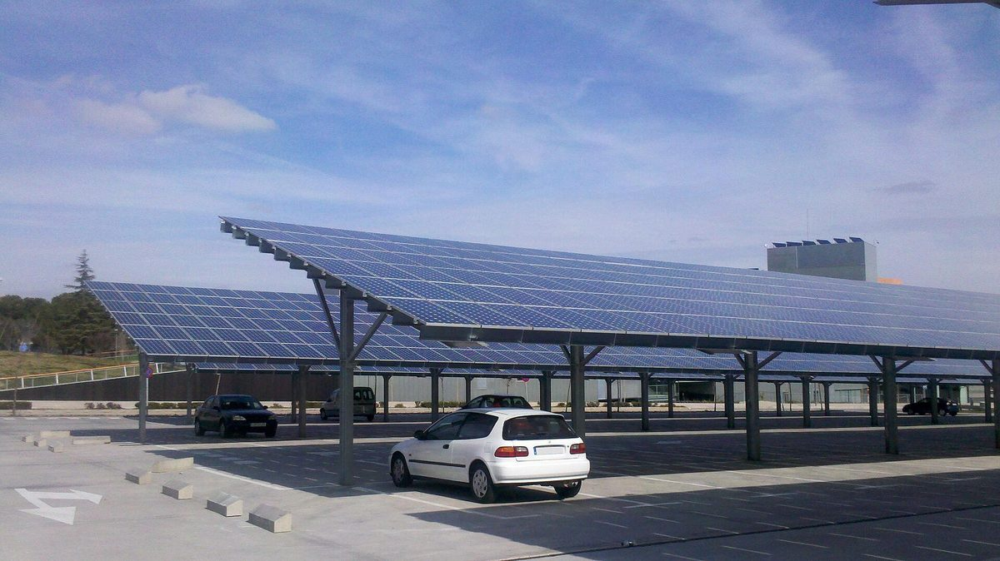
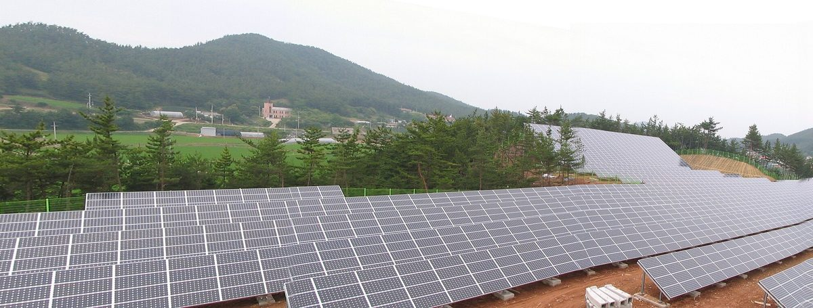
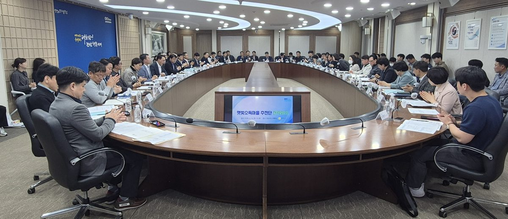

춘천 새마을금고·탄소중립지원센터·사회적협동조합, '시민 에너지 커뮤니티' 실험…시민햇빛협동조합 조합원 모집
1차 사업비 500만 원으로 햇빛놀이터·협동조합 교육, 2차엔 아파트 한 곳 베란다 미니태양광 실증 계획…장기적으로 5곳·조합원 1,000명 구상




태양광 사업자들, 지역별 도매가격제 상정되면 곧바로 가처분 신청하기로…민간 석탄·LNG 발전사도 합류
지방 기업 전기료 할인 재원 2조8,000억 원 가운데 1조5,000억~1조8,000억 원을 비수도권 도매가격 인하로 메우는 구상에 반발…협회는 오후 1시 판매 단가 39.1% 하락 모의계산, 정부는 의견 검토하겠다는 입장

에너지공단, 햇빛소득마을 등록기업 과거 업계약서 이력 확인…업계는 사후 제재로 마을 사업 흔들릴까 반발
언론 취재로는 등록 243곳 중 60여 곳이 대상…공단은 대상 수·발표 시점 안 밝혀, 문제 기업 생기면 다른 등록기업이 마을 사업 이어받도록 지침에 정해
- 인천연구원, 시민 에너지전환 참여 넓히려면 실천보상·생활권 공동실천·시민소유 확대해야
- 그리스, '에너지 공유 권리' 담은 전력시장 법안 의회 제출…다른 건물에서 만든 태양광 전기도 가정·중소기업·지자체가 나눠 쓴다
- 이 대통령, 2027년 예산안 시정연설서 "햇빛소득마을 확산 등 재생에너지 확대에 2조8,000억 원"…농어촌 기본소득 35개 군으로 두 배
- 제주 어민 대책협의회, 해상풍력 협의에 '실제 조업 어업인' 참여 요구…마을 이익공유만으로는 어장 상실 못 메운다
- 최동익 전남광주통합특별시의원, 통합 재정지원으로 2조 원 햇빛소득마을 육성기금 만들자 제안
- 진도군, 영농법인 임대 2028년까지 남은 군유 간척지에 태양광 임대 가능 회신…41MW·410억 원 민간 사업 선점 논란
정치 더보기 ›
이 대통령, 2027년 예산안 시정연설서 "햇빛소득마을 확산 등 재생에너지 확대에 2조8,000억 원"…농어촌 기본소득 35개 군으로 두 배
820조9,000억 원 예산안, 올해보다 12.8% 늘어…국토대전환·지방주도성장 33조 원, 지방 우대 사업 61개, 국회에 12월 2일 법정기한 안 확정 요청
정책 더보기 ›
태양광 사업자들, 지역별 도매가격제 상정되면 곧바로 가처분 신청하기로…민간 석탄·LNG 발전사도 합류
지방 기업 전기료 할인 재원 2조8,000억 원 가운데 1조5,000억~1조8,000억 원을 비수도권 도매가격 인하로 메우는 구상에 반발…협회는 오후 1시 판매 단가 39.1% 하락 모의계산, 정부는 의견 검토하겠다는 입장
산업 더보기 ›
현대제철 당진제철소 주차장 두 곳에 태양광 3.27MW 가동…환경단체는 재생에너지 대폭 확대 주문
61억 원 들여 특수목적법인이 설치·운영하고 현대제철이 빌려 쓰는 설비임대 방식, 연 1,736톤 감축 예상…충남환경운동연합 '필요 전력에 비하면 시작 단계'
사회 더보기 ›
이격거리 규제 풀린 서부경남 태양광 허가 급증…진주 70건 수준에서 올해 약 200건, 임차농·주민 갈등에 지자체 고민
사천 신규 허가 신청도 2년 전 147건에서 지난해 170건, 올해 이미 지난해 수준 육박…도로 이격거리 폐지·호남 계통 포화로 사업자 몰려, 주민 반대에도 법령상 허가 나야 하는 경우 있어
지역 더보기 ›
제주 어민 대책협의회, 해상풍력 협의에 '실제 조업 어업인' 참여 요구…마을 이익공유만으로는 어장 상실 못 메운다
한동·평대·대정·신창·추자 해상풍력 거론하며 착공 전 조업 실태 조사·민관협의회 구성 촉구…제주도·사업자 입장은 아직 안 나와
오피니언 더보기 ›
김승남 광주도시공사 사장, 영농형 태양광 이익 공유 이끌 독립 에너지공사 설립 촉구…전남개발공사 안 재생에너지 수익 비중 1.2% 들어
기고에서 '전남광주에너지공사' 조속 출범 주장…발전지구 기획·글로벌 기업 직접 전력구매계약 맡을 공공 사령탑 필요, 초기 재정자립도로만 판단 말아야
시민에너지 더보기 ›
춘천 새마을금고·탄소중립지원센터·사회적협동조합, '시민 에너지 커뮤니티' 실험…시민햇빛협동조합 조합원 모집
1차 사업비 500만 원으로 햇빛놀이터·협동조합 교육, 2차엔 아파트 한 곳 베란다 미니태양광 실증 계획…장기적으로 5곳·조합원 1,000명 구상
햇빛소득마을 더보기 ›
에너지공단, 햇빛소득마을 등록기업 과거 업계약서 이력 확인…업계는 사후 제재로 마을 사업 흔들릴까 반발
언론 취재로는 등록 243곳 중 60여 곳이 대상…공단은 대상 수·발표 시점 안 밝혀, 문제 기업 생기면 다른 등록기업이 마을 사업 이어받도록 지침에 정해
해외 더보기 ›
그리스, '에너지 공유 권리' 담은 전력시장 법안 의회 제출…다른 건물에서 만든 태양광 전기도 가정·중소기업·지자체가 나눠 쓴다
법안 12조로 전력법에 137Γ조 신설…6MW 이하 설비는 제3자가 운영 대행, 공공 소유 설비는 공유 전기의 평균 10% 이상을 취약가구에 돌리도록 노력해야
春川のセマウル金庫・炭素中立支援センター・社会的協同組合が「市民エネルギーコミュニティ」の実験…市民ひかり協同組合の組合員を募集
第1次事業費500万ウォンで「ひかりの遊び場」・協同組合教育、第2次ではマンション1カ所でベランダ用ミニ太陽光の実証を計画…長期的に5カ所・組合員1,000人を構想
韓国の太陽光事業者団体、地域別卸売価格制が上程されれば直ちに仮処分申請へ…民間の石炭・LNG発電事業者も合流
地方企業の電気料金割引財源2兆8,000億ウォンのうち1兆5,000億～1兆8,000億ウォンを非首都圏の卸売価格引き下げで賄う構想に反発…協会は午後1時の販売単価39.1%下落と試算、政府は意見を検討する立場
エネルギー公団、太陽光所得村の登録企業の過去の水増し契約書履歴を確認…業界は事後制裁で村の事業が揺らぐと反発
報道各社の取材では登録243社のうち60社余りが対象…公団は対象数・公表時期を明かさず、問題企業が出れば別の登録企業が村の事業を引き継ぐよう指針に規定
- 仁川研究院、市民のエネルギー転換参加を広げるには実践への報酬・生活圏での共同実践・市民所有の拡大を
- ギリシャ、「エネルギー共有の権利」を盛り込んだ電力市場法案を議会に提出…別の建物でつくった太陽光の電気も家庭・中小企業・自治体が分け合う
- 李大統領、2027年度予算案の施政演説で「太陽光所得村の拡大など再生可能エネルギー拡大に2兆8,000億ウォン」…農漁村基本所得は35郡へ倍増
- 済州の漁民対策協議会、洋上風力の協議に「実際に操業する漁業者」の参加を要求…村への利益共有だけでは漁場喪失は埋まらない
- 崔東益・全南光州統合特別市議員、統合財政支援で2兆ウォンの太陽光所得村育成基金を提案
- 珍島郡、営農法人の賃貸が2028年まで残る郡有干拓地に太陽光の賃貸可能と回答…41MW・410億ウォンの民間事業の先取り論争
政治 もっと見る ›
李大統領、2027年度予算案の施政演説で「太陽光所得村の拡大など再生可能エネルギー拡大に2兆8,000億ウォン」…農漁村基本所得は35郡へ倍増
予算案は820兆9,000億ウォンで今年より12.8%増…国土大転換・地方主導成長に33兆ウォン、地方優遇事業は61件、国会に12月2日の法定期限内の確定を要請
政策 もっと見る ›
韓国の太陽光事業者団体、地域別卸売価格制が上程されれば直ちに仮処分申請へ…民間の石炭・LNG発電事業者も合流
地方企業の電気料金割引財源2兆8,000億ウォンのうち1兆5,000億～1兆8,000億ウォンを非首都圏の卸売価格引き下げで賄う構想に反発…協会は午後1時の販売単価39.1%下落と試算、政府は意見を検討する立場
産業 もっと見る ›
現代製鉄唐津製鉄所、駐車場2カ所に太陽光3.27MWが稼働…環境団体は再生可能エネルギーの大幅拡大を求める
61億ウォンを投じ特別目的法人が設置・運営し現代製鉄が借りて使う設備リース方式、年1,736トンの削減見込み…忠南環境運動連合「必要電力に比べれば始まりの段階」
社会 もっと見る ›
離隔距離規制が緩和された慶尚南道西部で太陽光の許可が急増…晋州は70件程度から今年約200件、小作農・住民との対立に自治体が苦慮
泗川の新規許可申請も2年前の147件から昨年170件、今年すでに昨年並みに迫る…道路の離隔距離廃止と湖南の系統飽和で事業者が殺到、住民が反対しても法令上許可せざるを得ない場合も
地域 もっと見る ›
済州の漁民対策協議会、洋上風力の協議に「実際に操業する漁業者」の参加を要求…村への利益共有だけでは漁場喪失は埋まらない
漢東・坪岱、大静、新昌、楸子の洋上風力を挙げ、着工前の操業実態調査と官民協議会の設置を求める…済州道・事業者の立場はまだ出ていない
オピニオン もっと見る ›
光州都市公社のキム・スンナム社長、営農型太陽光の利益共有を担う独立エネルギー公社の設立を訴え…全南開発公社内の再エネ収益比率は1.2%と指摘
寄稿で「全南光州エネルギー公社」の早期発足を主張…発電地区の企画やグローバル企業との直接電力購入契約を担う公的司令塔が必要、初期の財政自立度だけで判断すべきでないと
市民エネルギー もっと見る ›
春川のセマウル金庫・炭素中立支援センター・社会的協同組合が「市民エネルギーコミュニティ」の実験…市民ひかり協同組合の組合員を募集
第1次事業費500万ウォンで「ひかりの遊び場」・協同組合教育、第2次ではマンション1カ所でベランダ用ミニ太陽光の実証を計画…長期的に5カ所・組合員1,000人を構想
太陽光所得村 もっと見る ›
エネルギー公団、太陽光所得村の登録企業の過去の水増し契約書履歴を確認…業界は事後制裁で村の事業が揺らぐと反発
報道各社の取材では登録243社のうち60社余りが対象…公団は対象数・公表時期を明かさず、問題企業が出れば別の登録企業が村の事業を引き継ぐよう指針に規定
海外 もっと見る ›
ギリシャ、「エネルギー共有の権利」を盛り込んだ電力市場法案を議会に提出…別の建物でつくった太陽光の電気も家庭・中小企業・自治体が分け合う
法案第12条で電力法に第137Γ条を新設…6MW以下の設備は第三者が運営を代行、公共所有の設備は共有電力の平均10%以上を脆弱世帯に回すよう努める
春川新村金库、碳中和支援中心与社会合作社开展“市民能源社区”实验…招募市民阳光合作社社员
第一期投入500万韩元开设“阳光游乐场”和合作社课程，第二期计划在一处公寓试点阳台迷你光伏…长期设想扩至5处、社员1,000人
韩国太阳能发电商团体拟在分区批发电价制度提交审议后立即申请禁令，民营煤电和LNG发电企业也加入
反对用压低非首都圈批发电价来筹措地方企业电费折扣资金2.8万亿韩元中1.5万亿至1.8万亿韩元的方案，协会测算下午1点售电单价下跌39.1%，政府表示将研究各方意见
能源公团核查阳光收入村登记企业过去的虚高合同记录…业界担忧事后制裁动摇村庄项目
据媒体采访，243家登记企业中约60家被列为对象…公团未公布对象数量和公布时间，指南规定问题企业出现时由其他登记企业接手村庄项目
政治 更多 ›
李在明总统在2027年度预算案施政演说中表示“将向扩大阳光收入村等可再生能源投入2万8,000亿韩元”…农渔村基本收入扩大一倍至35个郡
预算案820万9,000亿韩元，比今年增长12.8%…国土大转型与地方主导增长投入33万亿韩元，地方优待项目增至61个，请求国会在12月2日法定期限前审定
政策 更多 ›
韩国太阳能发电商团体拟在分区批发电价制度提交审议后立即申请禁令，民营煤电和LNG发电企业也加入
反对用压低非首都圈批发电价来筹措地方企业电费折扣资金2.8万亿韩元中1.5万亿至1.8万亿韩元的方案，协会测算下午1点售电单价下跌39.1%，政府表示将研究各方意见
产业 更多 ›
现代制铁唐津钢厂两处停车场3.27MW光伏投运…环保团体呼吁大幅扩大可再生能源
投资61亿韩元，由特殊目的法人建设运营、现代制铁租用的设备租赁模式，预计年减排1,736吨…忠南环境运动联合称"与所需电力相比只是起步"
社会 更多 ›
间距限制放宽后庆尚南道西部太阳能许可激增…晋州从约70件增至今年约200件，佃农与居民矛盾令地方政府为难
泗川新增许可申请也从两年前的147件增至去年的170件，今年已接近去年水平…道路间距规定取消、湖南电网饱和致业者涌入，即使居民反对，按法令有时仍须发放许可
地方 更多 ›
济州渔民对策协议会要求海上风电协商纳入“实际作业渔民”…只向村庄分享收益弥补不了渔场损失
点名汉东·坪岱、大静、新昌、楸子海上风电项目，敦促开工前开展作业实态调查、成立官民协议会…济州道和开发商尚未表态
评论 更多 ›
韩国光州都市公社社长Kim Seung-nam呼吁设立独立能源公社主导农光互补收益共享…指出全南开发公社内可再生能源收益占比仅1.2%
在投稿中主张尽快成立"全南光州能源公社"…需要负责规划发电园区、与跨国企业直接签订购电协议的公共指挥部，不应只以初期财政自给率来判断
市民能源 更多 ›
春川新村金库、碳中和支援中心与社会合作社开展“市民能源社区”实验…招募市民阳光合作社社员
第一期投入500万韩元开设“阳光游乐场”和合作社课程，第二期计划在一处公寓试点阳台迷你光伏…长期设想扩至5处、社员1,000人
阳光收入村 更多 ›
能源公团核查阳光收入村登记企业过去的虚高合同记录…业界担忧事后制裁动摇村庄项目
据媒体采访，243家登记企业中约60家被列为对象…公团未公布对象数量和公布时间，指南规定问题企业出现时由其他登记企业接手村庄项目
海外 更多 ›
希腊向议会提交含“能源共享权”的电力市场法案…其他建筑产生的光伏电力也可由家庭、中小企业和地方政府分享
法案第12条在电力法中新增第137Γ条…6MW以下设施可由第三方代为运营，公共所有设施应尽力把平均10%以上的共享电力分给弱势家庭
Chuncheon credit union, carbon neutrality centre and social co-op test a "citizen energy community," recruiting members for a citizen solar co-op
First phase spent 5 million won on a "sunshine playground" and co-op classes; second phase plans a balcony mini-solar trial at one apartment complex, with a long-term vision of five sites and 1,000 members
Korean solar groups plan injunction the moment locational wholesale pricing is tabled; private coal and LNG generators join
They oppose a plan to cover 1.5 to 1.8 trillion won of a 2.8 trillion won regional industrial power discount by cutting wholesale prices outside the Seoul area; an association simulation shows a 39.1% price drop at 1 p.m., and the government says it will review stakeholders' views
Energy agency reviews past inflated-contract records of Sunlight Income Village contractors as industry warns late sanctions could unsettle village projects
Media reporting puts about 60 of 243 registered firms under review; the agency will not disclose numbers or timing, and its guidelines let another registered firm take over a village project if a sanctioned contractor runs into trouble
- Incheon Research Institute says wider citizen role in energy transition needs rewards, neighbourhood action and more citizen ownership
- Greece tables electricity market bill with a "right to energy sharing", letting households, small businesses and municipalities share solar power produced at other buildings
- President Lee pledges 2.8 trillion won "for expanding renewables, including spreading Sunlight Income Villages" in 2027 budget speech, doubling farm and fishing basic income to 35 counties
- Jeju fishers' council demands that fishers who actually work the waters join offshore wind talks, saying benefit-sharing with nearby villages cannot make up for lost fishing grounds
- Gwangju-Jeonnam councillor Choi Dong-ik proposes 2 trillion won Sunlight Income Village fund from integration subsidies
- Jindo County says reclaimed land still leased to farm corporations until 2028 can be rented for solar, raising questions over a 41MW, 41 billion won private project getting in first
Politics More ›
President Lee pledges 2.8 trillion won "for expanding renewables, including spreading Sunlight Income Villages" in 2027 budget speech, doubling farm and fishing basic income to 35 counties
The 820.9 trillion won budget proposal is up 12.8% on this year, with 33 trillion won for national land transformation and region-led growth and 61 programmes favouring regions; the president asked the National Assembly to pass it by the 2 December legal deadline
- Changwon councillor proposes a Changwon-style agrivoltaics and rural solar strategy in five-minute speech, calling for a master plan, pilot projects and a share of revenue for farmers and villages
- President Lee Jae-myung answers farmers' "solar is a power business" criticism: give the chance to local residents, not outside developers
- Clause allowing direct nuclear power purchases (PPAs) in Korea's mega special zone bill draws controversy as climate ministry softens wording from hard to agree to careful approach
- Jinju council committee chair Choi Min-guk calls for review of zoning limits on rooftop solar in residential areas; only Jinju and Geoje in South Gyeongsang also bar semi-residential zones
Policy More ›
Korean solar groups plan injunction the moment locational wholesale pricing is tabled; private coal and LNG generators join
They oppose a plan to cover 1.5 to 1.8 trillion won of a 2.8 trillion won regional industrial power discount by cutting wholesale prices outside the Seoul area; an association simulation shows a 39.1% price drop at 1 p.m., and the government says it will review stakeholders' views
- Jeonbuk Development Corporation seeks 'energy division' and 92.6 billion won capital injection by 2029 to expand renewables; provincial council committee holds off, citing lack of explanation
- Korean National Assembly forum splits over bill to let agricultural cooperatives own farmland for joint farming, agrivoltaics and eco-friendly farming
- Ahead of Korea's agrivoltaics act taking effect on December 17, calls grow to "let Nonghyup take part" as farm co-ops are left out of both developer eligibility and the draft support-centre list
- President Lee says Yeongyang's shared wind and solar revenue "could be used" to fund basic income, as the county proposes a "lifetime pension" built on a 10% stake in a wind SPC bought for 50 billion won
Industry More ›
Hyundai Steel starts 3.27MW of solar at two parking lots of its Dangjin steelworks; environmental group calls for far larger renewable build-out
KRW 6.1 billion leasing model in which a special purpose company builds and runs the arrays and Hyundai Steel rents them, with 1,736 tonnes of annual cuts expected; South Chungcheong environmental group says it is only a first step against the power needed
- Only one consortium bids for 30 MW RE100 solar project at Saemangeum industrial complex; developer reopens tender until 13 November
- Busan's 1990-built Sinpyeong-Jangnim industrial complex to get 12.253MW of solar and 5MWh of storage as KOSPO consortium signs 32 billion won deal running to 2029
- Seoul Metro installs 733.83kW of solar on four rooftops and parking areas at Jinjeop depot for its own use, expects to save 177 million won a year
- Boseong co-op head cites collateral and elderly residents' upfront costs as barriers to agrivoltaics, floats the co-op covering their share
Society More ›
Solar permits surge in western South Gyeongsang after setback rules are eased, with Jinju going from about 70 last year to some 200 this year as conflicts with tenant farmers and residents trouble local governments
New permit applications in Sacheon rose from 147 two years ago to 170 last year and are already near that level this year; the scrapping of road setbacks and grid saturation in the Honam region are drawing developers, and permits must sometimes be granted despite residents' objections
- Nine years into the Naju Lake floating solar dispute, even supporters say "what we first asked for was resident participation"; criteria for judging local acceptance still undisclosed
- As solar projects spread to islands, residents across Tongyeong push back; applications for 1MW-plus generation licences in South Gyeongsang reach 200 this year alone
- Incheon opens citizens' deliberation on 1.54 million m² atop Sudokwon Landfill No. 2 on the 29th, as government solar proposal meets residents' opposition
- Gyeonggi Province drafts 56.5% cut to next year's social and solidarity economy budget, with zero program funding for its Social Economy Center
Regions More ›
Jeju fishers' council demands that fishers who actually work the waters join offshore wind talks, saying benefit-sharing with nearby villages cannot make up for lost fishing grounds
Naming projects off Handong-Pyeongdae, Daejeong, Sinchang and Chuja, the council calls for surveys of fishing activity before construction and a public-private council; the provincial government and developers have yet to respond
- Jindo County says reclaimed land still leased to farm corporations until 2028 can be rented for solar, raising questions over a 41MW, 41 billion won private project getting in first
- Gwangju-Jeonnam councillor Jo In-ho proposes new seaweed farming licences in waters around Wando's 600MW Geumil offshore wind project
- Stalled Heulli wind project in Goseong, Gangwon, revived as 'resident-led' scheme with county taking 30% and residents 20% of a planned SPC
- All 15 Gyeongnam cities and counties with solar setback rules are out of line with the revised decree, keeping road setbacks and, in Uiryeong, a 700m buffer from homes
Opinion More ›
Gwangju Urban Corporation CEO Kim Seung-nam calls for an independent energy corporation to lead profit-sharing from agrivoltaics, citing a 1.2% renewables revenue share at Jeonnam Development Corporation
In a contributed column he urges the swift launch of a "Jeonnam-Gwangju Energy Corporation" as a public control tower to plan generation zones and sign direct power purchase agreements with global companies, saying it should not be judged on early financial self-sufficiency alone
- "Citizens should own public car park solar, not just buy into a fund": Jang Si-jeong of Yeomjeongol Solar Cooperative calls for co-ops in Incheon's 40MW public SPC
- Jeju should set rules for returning renewable energy profits to residents first, local series argues, citing Sinan's sunlight and wind pensions that have passed 30 billion won
- Encored CEO Choi Jong-woong urges a shift to a decentralised power system at a Naju forum, citing US CCAs to argue that local power income should be shared with residents
- Chungnam environmental group's energy transition team leader Jo Sun-hyeong proposes an ordinance for a permanent climate citizens' assembly in Dangjin
Citizen Energy More ›
Chuncheon credit union, carbon neutrality centre and social co-op test a "citizen energy community," recruiting members for a citizen solar co-op
First phase spent 5 million won on a "sunshine playground" and co-op classes; second phase plans a balcony mini-solar trial at one apartment complex, with a long-term vision of five sites and 1,000 members
- Incheon Research Institute says wider citizen role in energy transition needs rewards, neighbourhood action and more citizen ownership
- Hallim offshore wind farm, a government 'model of resident participation', paid residents' bond interest out of their extra REC revenue; three law firms advised it breaches the law
- Seoul's Yeongdeungpo citizen solar cooperative proposes resident-funded solar plants on public car parks and rooftops; district head's office to check feasibility
- Suwon seminar on a "solar fridge" model proposes using citizen solar revenue to stock 43 community fridges, with a "solar food solidarity fund"
Sunlight Income Village More ›
Energy agency reviews past inflated-contract records of Sunlight Income Village contractors as industry warns late sanctions could unsettle village projects
Media reporting puts about 60 of 243 registered firms under review; the agency will not disclose numbers or timing, and its guidelines let another registered firm take over a village project if a sanctioned contractor runs into trouble
- Gwangju-Jeonnam councillor Choi Dong-ik proposes 2 trillion won Sunlight Income Village fund from integration subsidies
- Korea's Sunlight Income Village task force gets a new 461 million won operating budget, but only 13 of 87 first-round villages can actually proceed
- Jeju's first two Sunlight Income Villages get under way as the province moves to cover about 70% of villages' 15% self-funded share from its regional decline fund
- Solar income villages: Icheon mayor and a Gumi village head float plans to spend profits on community care and shared meals
World More ›
Greece tables electricity market bill with a "right to energy sharing", letting households, small businesses and municipalities share solar power produced at other buildings
Article 12 adds Article 137Γ to the electricity law; third parties may run schemes and own installations up to 6MW, and public bodies must make best efforts to direct on average at least 10% of shared power to vulnerable households
- Mainz citizen energy cooperative UrStrom opens sign-ups for energy sharing pilot that passes surplus power from a railway company's rooftop solar to neighbors
- Dordogne mixed-economy company SEM 24 opens 5,150 MWh-a-year solar park on regional authority land, selling power to local dessert factories at a fixed price for 20 years
- Portugal's operating collective self-consumption and renewable energy community projects reach 2,127, up 142% by September after rule changes
- Romanian city of Brașov plans 20 MW solar park on 22 hectares to supply 90% of municipal institutions' power, from schools and theatres to street lighting, from 2027